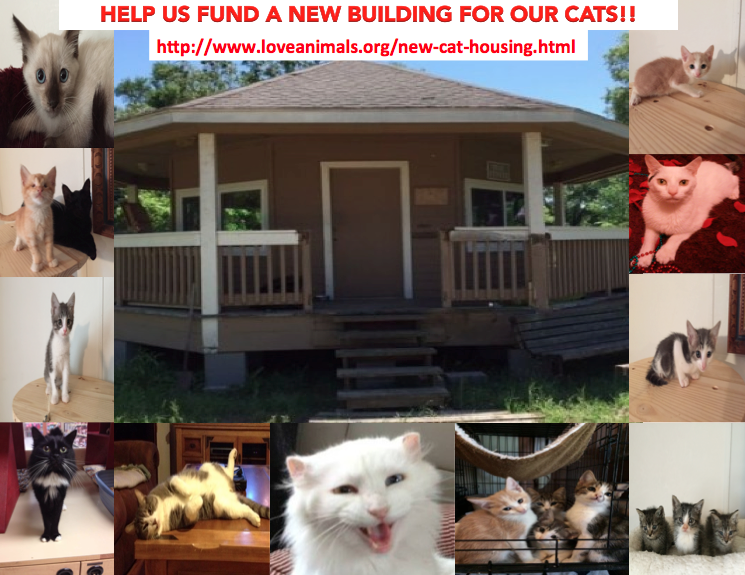
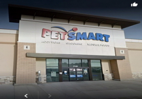

Weekly Adoption Events
Our dedicated volunteers bring cats, kittens, and other animals to PetSmart locations every single Saturday. No appointment needed — just stop in and say hello to some incredible animals looking for their forever homes!
Come meet our animals in person — every Saturday at two locations near you!
Our dedicated volunteers bring cats, kittens, and other animals to PetSmart locations every single Saturday. No appointment needed — just stop in and say hello to some incredible animals looking for their forever homes!


📍 21436 Market Place Dr, New Caney TX 77357
🕐 11:00 AM – 4:00 PM
Join us every Saturday at the Valley Ranch PetSmart location. Meet cats, kittens, and other animals available for adoption. Adoption counselors are on hand to answer your questions.
📍 20518 Hwy 59, Humble TX 77338
🕐 10:00 AM – 3:30 PM
Our Humble location features foster pet adoptions every Saturday. Come meet loveable animals that are currently being fostered in caring homes and are ready for their next chapter.
Check out our Past Events page to see what we've been up to, or contact us for the latest schedule updates.